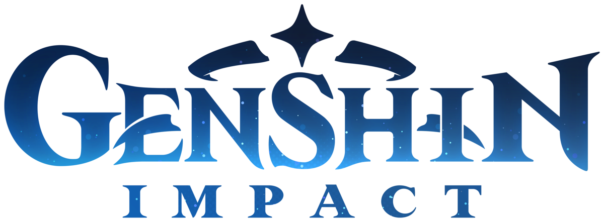
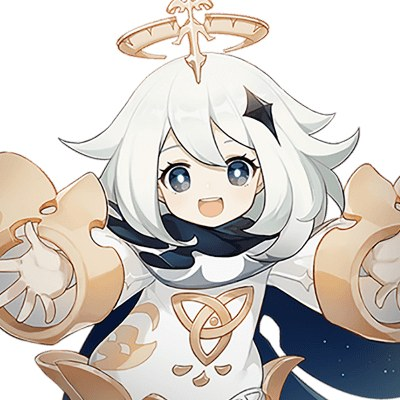

new
Paimon
@GenshinImpact

UPDATE 2.1
Dear Travelers,
To ensure all Travelers have the best-possible Genshin Impact experience, our developers will soon begin
performing update maintenance. After this is complete, the game will update to a new version.
After Travelers install the new game client, they will be able to continue playing. It is recommended to install
the update over a Wi-Fi connection owing to the large file size.
While the update maintenance is in progress, Travelers will be unable to log in to the game. Please take note of
the update time and schedule your game time accordingly to avoid losing your progress. We hope Travelers will
bear with us during the disruption.>
〓Update Schedule〓
Update maintenance begins 2021/09/01 06:00 (UTC+8) and is estimated to take 5 hours.
〓How to Update Game Client〓
PC: Close the game, open the Genshin Impact Launcher, and click Update.
iOS: Open the App Store and tap Update.
Android: Open the game and follow the directions on-screen.
PlayStation®4 and PlayStation®5: Highlight Genshin Impact from the Home Screen, press the "OPTIONS" button,
and select "Check for Update."
Please do not hesitate to contact Customer Service if you encounter any issues installing the new version. We
will do our very best to resolve the issue.
〓Update Details〓
I. New Inazuma Islands — Seirai Island and Watatsumi Island
◇ New Islands: After the Version 2.1 update, two new islands, Seirai Island and Watatsumi Island in the
Inazuma region will be available.
◇ Unlock Criteria:
• Reach Adventure Rank 30 or above
• Complete the Archon Quest "Chapter II: Act I - The Immovable God and the Eternal Euthymia"
Paimon
@GenshinImpact
UPDATE 2.0
Dear Travelers,
Below are the details of the Version 2.0 update "The Immovable God and the Eternal Euthymia" and the update
compensation.
〓Compensation〓
Maintenance Compensation: Primogems ×300 (60 Primogems per hour the servers are down)
Issue Fix Compensation: Primogems ×300 (please refer to the relevant compensation mail for more details)
〓Scope of Compensation〓
Maintenance Compensation: Travelers who reach Adventure Rank 5 or above before 2021/07/21 06:00 (UTC+8).
Please claim before the end of Version 2.0.
Issue Fix Compensation: Travelers who reach Adventure Rank 5 and above before 2021/07/21 06:00 (UTC+8).
Please claim the compensation mail before 2021/07/24 06:00 (UTC+8).
Our developers will distribute compensation to Travelers via in-game mail within 5 hours after the update
maintenance is finished. The mail will expire after 30 days, so don't forget to claim the attached compensation
in time.
〓Update Schedule〓
Update maintenance begins 2021/07/21 06:00 (UTC+8) and is estimated to take 5 hours.
〓How to Update Game Client〓
PC: Close the game, open the Genshin Impact Launcher, and click Update.
iOS: Open the App Store and tap Update.
Android: Open the game and follow the directions on-screen.
PlayStation®4 and PlayStation®5: Highlight Genshin Impact from the Home Screen, press the "OPTIONS" button, and
select "Check for Update."
Please do not hesitate to contact Customer Service if you encounter any issues installing the new version. We
will do our very best to resolve the issue.
〓Update Details〓
I. New Region
New Region - Inazuma
◇ New Areas: In Version 2.0, three areas, Narukami Island, Kannazuka, and Yashiori Island in the Inazuma region
will be available.
◇ Unlock Criteria:
• Adventure Rank 30 or above
• Complete the Archon Quest "Chapter II: Act I - The Immovable God and the Eternal Euthymia"
Paimon
@GenshinImpact
UPDATE 1.7
Fixed a bug where Minor cosmetic
Addressed some UI issues.
Fixed missing audio related issue.
Fixed SFX and Animation issues throughout the game.